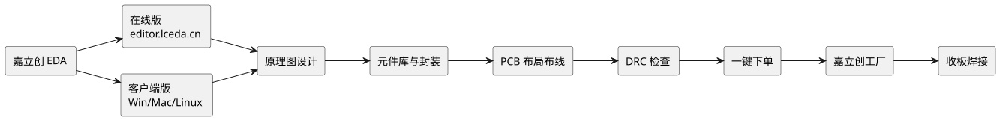
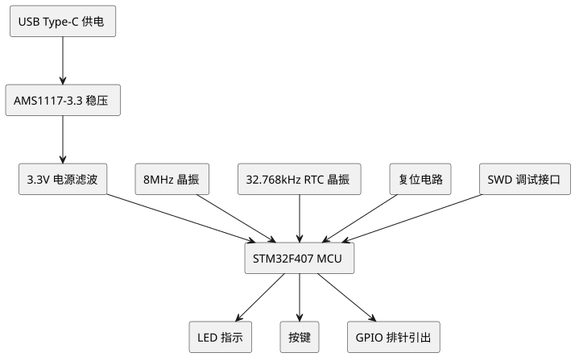

第 26 章 嘉立创 EDA PCB 设计
学习目标
- 理解嘉立创 EDA（JLCEDA）在国产 EDA 工具中的定位与特点，能与 Altium Designer 进行合理对比
- 掌握嘉立创 EDA 在线版与客户端版的差异，能够根据场景选择合适版本并完成账号注册与环境搭建
- 掌握原理图设计、元件库与封装管理、PCB 布局布线的完整流程
- 理解 DRC 设计规则检查与"一键下单"打样流程，能够将设计文件发送到嘉立创工厂并跟踪生产进度
- 完成 STM32F407 最小系统板实战项目，从原理图到收板焊接测试打通完整闭环
第 25 章介绍了行业主流的专业 EDA 软件 Altium Designer，功能强大但学习曲线较陡、授权费用高昂。对于学生、爱好者以及中小型项目而言，国产 EDA 工具——嘉立创 EDA（JLCEDA）提供了一种更易上手、完全免费、且与 PCB 工厂无缝对接的替代方案。本章将系统讲解嘉立创 EDA 的使用方法，并以 STM32F407 最小系统板为实战项目，带领读者完成从原理图设计到 PCB 下单打样的全过程。

查看 PlantUML 源码
@startuml
skinparam defaultFontName "Microsoft YaHei"
skinparam backgroundColor #ffffff
left to right direction
rectangle "嘉立创 EDA" as A
rectangle "在线版\neditor.lceda.cn" as B
rectangle "客户端版\nWin/Mac/Linux" as C
rectangle "原理图设计" as D
rectangle "元件库与封装" as E
rectangle "PCB 布局布线" as F
rectangle "DRC 检查" as G
rectangle "一键下单" as H
rectangle "嘉立创工厂" as I
rectangle "收板焊接" as J
A --> B
A --> C
B --> D
C --> D
D --> E
E --> F
F --> G
G --> H
H --> I
I --> J
@enduml§26.1 嘉立创 EDA 简介与定位
嘉立创 EDA 是由深圳市嘉立创科技有限公司（JLC）开发的国产 EDA 软件，定位为"让更多人轻松完成 PCB 设计"。嘉立创科技本身是中国最大的 PCB 打样与 SMT 贴片代工厂之一，日均处理订单数万单，因此其 EDA 工具与自家工厂的工艺能力、物料库存深度绑定，形成"设计-下单-制造-发货"的一站式闭环。
§26.1.1 国产 EDA 的发展背景
长期以来，PCB 设计软件市场被 Altium Designer、Cadence Allegro、Mentor Graphics PADS 等国外软件垄断，授权费用动辄数万元，对个人开发者和小公司极不友好。近年来，国产 EDA 软件开始崛起：
- 立创 EDA（嘉立创 EDA）：在线起家，免费、易用、对接自家工厂，学生和创客群体用户量大。
- 华大九天九天 EDA：面向模拟电路与平板显示设计，工业级定位。
- 概伦电子 NanoSpice：面向集成电路仿真验证。
- 芯和半导体芯和 EDA：高速仿真与封装协同设计。
对单片机课程而言，嘉立创 EDA 是最合适的国产 EDA 入门工具——它的目标是"5 分钟画完一块 LED 闪烁板"，对学生和初学者极为友好。
§26.1.2 嘉立创 EDA 的核心特点
| 特性 | 说明 |
|---|---|
| 完全免费 | 个人与教育用户永久免费，无功能限制，无水印 |
| 在线 + 客户端 | 浏览器即开即用，也可下载客户端离线工作 |
| 云端存储 | 工程自动同步到云端，多设备访问，永不丢失 |
| 官方封装库 | 数十万个元件已绑定嘉立创实物料号，可一键 BOM 下单 |
| 一键下单 | 设计完成后直接发送到嘉立创工厂，5 片 10×10cm 双层板 5 元起 |
| 实时协作 | 在线版支持多人同时编辑同一工程，类似 Google Docs |
| 3D 预览 | PCB 设计阶段即可查看 3D 立体效果，验证机械尺寸 |
| 开源工程广场 | 内置大量开源工程，可一键复制修改，适合学习 |
§26.1.3 与 Altium Designer 的对比
第 25 章已详细介绍 Altium Designer（简称 AD）。下表从多个维度对比 AD 与嘉立创 EDA，帮助读者根据自身需求选择：
| 维度 | Altium Designer | 嘉立创 EDA |
|---|---|---|
| 授权费用 | 数万元（教育版免费但需申请） | 完全免费 |
| 学习曲线 | 陡峭，菜单复杂 | 平缓，引导完善 |
| 功能深度 | 专业级，多层高速设计、SI/PI 仿真 | 中端，2-6 层板足够 |
| 运行环境 | Windows，硬件要求高 | 跨平台，浏览器即可 |
| 元件库 | 需自建或购买，工作量大 | 官方维护，数十万料号 |
| 下单流程 | 导出 Gerber 后另找板厂 | 一键下单到嘉立创工厂 |
| 协作能力 | 支持有限（需 365 订阅） | 在线版原生实时协作 |
| 适用人群 | 专业工程师、大公司 | 学生、创客、小公司 |
| 典型场景 | 多层高速板、复杂项目 | 2-4 层教学/原型板 |
§26.2 在线版与客户端版对比
嘉立创 EDA 提供在线版和客户端版两种形态，功能基本一致，但运行环境和使用体验有所差异。初学者常困惑该选哪个版本，本节详细对比。
§26.2.1 在线版（editor.lceda.cn）
在线版是嘉立创 EDA 的旗舰形态，访问地址为 https://editor.lceda.cn/（标准版）或 https://pro.lceda.cn/（专业版）。打开浏览器登录账号即可开始设计，无需安装任何软件。
在线版优点：
- 跨平台：Windows、Mac、Linux、Chromebook 都能使用，只需现代浏览器。
- 云端存储：工程自动保存到云端，永不丢失，多设备无缝切换。
- 实时协作：可邀请多人同时编辑同一工程，类似 Google Docs，适合团队开发。
- 无需维护：版本自动更新，无需手动升级，始终使用最新功能。
- 分享便捷：工程可生成分享链接，他人点击即可查看或克隆。
在线版缺点：
- 依赖网络：断网无法工作，网络不稳定时体验差。
- 大文件慢：元件数超过 500 个的大型工程，加载和操作会卡顿。
- 浏览器限制：受浏览器内存上限影响，超大型 PCB 渲染会变慢。
- 无法离线：飞机、高铁等无网环境完全无法使用。
§26.2.2 客户端版
客户端版是嘉立创 EDA 的本地安装版本，支持 Windows、macOS、Linux 三大平台，可从官网 https://lceda.cn/page/download 下载。
客户端版优点：
- 本地速度快：大型工程加载和操作流畅，不受浏览器限制。
- 离线工作：断网仍可编辑，联网后自动同步到云端。
- 原生体验：符合操作系统原生窗口、快捷键习惯。
- 大文件友好：上千元件的复杂工程也能流畅运行。
客户端版缺点：
- 单机使用：不支持多人实时协作（但可同步后他人接力编辑）。
- 需手动更新：新版本需手动下载安装。
- 占用磁盘：安装包约 300-500 MB，工程文件本地缓存占用空间。
§26.2.3 版本选择建议
| 使用场景 | 推荐版本 | 理由 |
|---|---|---|
| 学生个人学习 | 客户端版 | 本地速度快，宿舍断网也能用 |
| 课堂演示教学 | 在线版 | 机房免安装，即开即用 |
| 团队协作开发 | 在线版 | 实时多人编辑，沟通成本低 |
| 复杂大型工程 | 客户端版 | 性能稳定，避免浏览器卡顿 |
| 出差/移动办公 | 在线版 | 任何电脑都能访问 |
https://lceda.cn/page/download。
§26.3 环境搭建与账号注册
本节以客户端版为例，介绍嘉立创 EDA 的账号注册、软件下载、安装与首次配置流程。
§26.3.1 注册嘉立创账号
嘉立创 EDA 的账号与嘉立创商城、嘉立创工厂共用一套账号体系，注册一次即可在所有平台通用。注册方式：
- 访问
https://lceda.cn/，点击右上角"注册"。 - 支持三种注册方式：
- 手机号注册：输入手机号 + 短信验证码 + 设置密码。
- 邮箱注册：输入邮箱 + 邮箱验证码 + 设置密码。
- 微信扫码注册：使用微信扫一扫自动完成注册与登录。
- 填写昵称、行业（学生选"教育"）、用途等信息，完成注册。
- 注册成功后，使用同一账号登录
https://www.jlc.com/（嘉立创工厂）和https://lcsc.com/（立创商城），账号已自动打通。
§26.3.2 下载与安装客户端版
客户端版下载与安装步骤：
- 访问
https://lceda.cn/page/download。 - 选择对应平台：
- Windows：下载
Lceda_Win_x.y.z.exe（约 200 MB）。 - macOS：下载
Lceda_Mac_x.y.z.dmg。 - Linux：下载
Lceda_Linux_x.y.z.AppImage。
- Windows：下载
- Windows 安装：双击
.exe，按向导选择安装路径（建议默认C:\Program Files\Lceda\），点击"下一步"直至完成。 - macOS 安装：双击
.dmg，将 Lceda 图标拖入 Applications 文件夹。 - 首次启动时，使用注册的嘉立创账号登录。
安装完成后，建议在"帮助 → 检查更新"中确认已安装最新版本。嘉立创 EDA 更新频繁（每月 1-2 次），新版本会修复 bug 并增加新功能。
§26.3.3 首次运行配置
首次启动客户端版后，建议进行以下配置：
- 设置默认库路径：在"系统设置 → 立创商城"中勾选"使用立创商城基础库"，这样放置元件时优先从官方库搜索，避免使用未授权封装。
- 设置工程目录：在"系统设置 → 同步设置"中指定本地工程缓存目录，建议放在
D:\JLCEDA_Projects\（不要放 C 盘，避免系统重装丢失）。 - 设置主题：在"系统设置 → 主题"中选择"亮色"或"暗色"，根据个人喜好。
- 开启自动保存：默认每 30 秒自动保存，建议保留。
- 绑定嘉立创工厂：在"系统设置 → 嘉立创下单"中确认账号已绑定，后续才能一键下单。
§26.3.4 工程文件结构
嘉立创 EDA 的工程文件结构与 Altium Designer 类似，但扩展名不同：
| 文件类型 | 扩展名 | 说明 | AD 对应 |
|---|---|---|---|
| 工程文件 | .epro | 管理整个工程，包含原理图、PCB、库的引用关系 | .PrjPcb |
| 原理图 | .esch | 原理图文件，可多张 | .SchDoc |
| PCB 文件 | .epcb | PCB 布局布线文件 | .PcbDoc |
| 符号库 | .elib | 自定义元件符号库 | .SchLib |
| 封装库 | .plib | 自定义封装库 | .PcbLib |
一个典型工程目录结构如下：
STM32F407_MinSystem/
├── STM32F407_MinSystem.epro # 工程文件
├── schematic/
│ ├── main.esch # 主原理图（电源、晶振、复位）
│ └── mcu.esch # MCU 子图
├── pcb/
│ └── STM32F407.epcb # PCB 文件
└── libraries/
├── my_symbols.elib # 自建符号库
└── my_footprints.plib # 自建封装库§26.4 原理图设计
原理图是 PCB 设计的起点，描述电路的电气连接关系。本节以一个简单的 STC89C52RC LED 闪烁电路为例，演示嘉立创 EDA 的原理图设计流程。
§26.4.1 新建工程与原理图
- 启动嘉立创 EDA 客户端，点击"文件 → 新建 → 工程"。
- 在弹出的对话框中：
- 工程名称：
LED_Blink - 工程路径：
D:\JLCEDA_Projects\ - 工程类型：选择"板级设计"（包含原理图 + PCB）
- 工程名称：
- 点击"确定"，工程创建完成后，左侧工程面板会出现
LED_Blink.epro。 - 右键工程 → "新增 → 原理图"，创建一张原理图
Sheet1.esch，自动打开原理图编辑器。
原理图编辑器界面主要由以下部分组成：
- 顶部菜单栏：文件、编辑、放置、设计、工具、帮助等。
- 左侧面板：工程树、元件库、属性、图层（PCB 时）。
- 中央画布：原理图绘制区域，白色背景，A4 大小。
- 右侧面板：元件属性、设计管理器。
- 底部状态栏：坐标、缩放、网格设置。
§26.4.2 放置元件
嘉立创 EDA 提供三种放置元件的方式：
方式一：从元件库面板搜索（最常用）
- 在左侧"元件库"面板的搜索框中输入元件型号或关键词。
- 例如输入
STC89C52RC，会显示嘉立创官方库中的匹配元件。 - 双击元件或拖拽到画布上即可放置。
- 放置后按
Tab键可编辑元件属性。
方式二：使用快捷键 P
- 按
P键弹出"放置元件"对话框。 - 可在搜索框中输入元件名称，回车后放置。
方式三：从基础库分类浏览
- 元件库面板下方有分类树：电阻、电容、二极管、集成电路、接插件等。
- 适合不熟悉型号但知道类别的初学者。
下表列出单片机课程常用的元件及其在嘉立创 EDA 中的搜索关键词：
| 元件 | 搜索关键词 | 典型封装 | 说明 |
|---|---|---|---|
| STC89C52RC | STC89C52RC | DIP-40 / LQFP-44 | 本课程 8 位单片机 |
| STM32F407VGT6 | STM32F407VGT6 | LQFP-100 | 本课程 32 位单片机 |
| 电阻 | 0805 resistor 或 R 0805 | 0805 / 0603 | 贴片电阻 |
| 电容 | 0805 capacitor 或 C 0805 | 0805 / 0603 | 贴片电容 |
| LED | LED 0805 | 0805 / 0603 | 贴片 LED |
| 晶振 | crystal 8MHz | HC-49S / 5032 | 主时钟晶振 |
| 排针 | header 2.54 1x20 | 2.54mm 1×20 | GPIO 引出 |
| AMS1117-3.3 | AMS1117-3.3 | SOT-223 | 3.3V LDO 稳压 |
| USB Type-C | USB Type-C | TYPE-C-31-M-12 | 供电与通信 |
§26.4.3 放置导线与网络标签
元件放置完成后，需要用导线连接它们。嘉立创 EDA 的导线操作：
- 绘制导线：按
W键或菜单"放置 → 导线"，进入布线模式。鼠标点击元件引脚端点开始，再次点击结束。中间可多次点击转折。 - 取消布线：按
Esc退出布线模式。 - 删除导线：选中导线后按
Delete。
当电路连接较复杂、导线交叉过多时，可使用网络标签代替直接连线。网络标签是给一个电气节点命名，相同名字的节点自动连接。
- 放置网络标签：按
N键，输入标签名（如LED1、UART_TX），放置到导线上。 - 命名规范：建议使用大写英文 + 下划线，如
UART_TX、SPI_MOSI、I2C_SCL。 - 电源网络：电源端口（VCC/GND/3V3）本质上也是网络标签，但用专门的图形符号表示。
§26.4.4 电源端口
嘉立创 EDA 提供专门的电源端口符号，便于标识电源网络。按 Shift+P 或菜单"放置 → 电源端口"，可选择以下符号：
| 符号 | 网络名 | 用途 |
|---|---|---|
| VCC（圆形） | VCC | 通用正电源 |
| +5V（箭头向上） | +5V / 5V | 5V 电源 |
| +3.3V（箭头向上） | +3V3 / 3V3 | 3.3V 电源 |
| GND（三角向下） | GND | 地 |
| AGND（三角向下） | AGND | 模拟地 |
| VBAT（圆形） | VBAT | 电池电源 |
3V3 和 +3V3 是两个不同的网络，会导致 PCB 上连接断开。建议工程开始时就统一命名规范。
§26.4.5 总线与层次化设计
当多条相关信号并行（如 STM32 的 GPIOA 0-15 共 16 根线）时，使用总线可以简化原理图：
- 按
Shift+B进入总线绘制模式。 - 绘制一条粗总线（默认蓝色粗线）。
- 用普通导线将每根 GPIO 引脚连到总线。
- 每根导线在汇入总线处放置网络标签（如
PA0、PA1…PA15）。 - 在另一端用相同网络标签引出，电气上即自动连接。
对于复杂电路（如 MCU + 电源 + 外设三大模块），可使用层次化设计将原理图分多张：
- 在主原理图中放置"图纸符号"（rectangle），代表子图。
- 每个图纸符号添加"端口"（port），对应子图的输入输出。
- 双击图纸符号进入子图编辑。
- 这种设计类似 C 语言的函数调用，使原理图层次清晰。
§26.4.6 元件属性编辑
放置元件后，需要编辑其属性。双击元件或按 Tab 打开属性对话框，关键属性包括：
| 属性 | 说明 | 示例 |
|---|---|---|
| 位号（Designator） | 元件唯一编号，必须填写 | R1、C3、U1 |
| 注释（Comment） | 元件型号，显示在原理图 | STC89C52RC |
| 封装（Footprint） | PCB 上的物理形状，决定 PCB | DIP-40 |
| 值（Value） | 元件参数值 | 10k、100nF |
| 物料号（LCSC） | 嘉立创物料编号，用于下单 | C89317 |
| 描述 | 补充说明 | 10kΩ 0805 1% |
批量编号位号可使用"工具 → 元件编号"功能，自动将所有 R? 改为 R1, R2, R3…，避免重号。
§26.5 元件库与封装管理
元件库是 EDA 软件的核心资源。嘉立创 EDA 的最大优势之一就是拥有官方维护的庞大元件库，且每个元件都绑定了嘉立创商城的实物料号，可直接下单采购。
§26.5.1 内置元件库
嘉立创 EDA 内置元件库分为两类：
- 基础库：嘉立创官方精选的常用元件，每个都有完整符号、封装、3D 模型，且绑定嘉立创实物料号。基础库元件可在下单时自动加入 BOM，无需手动管理。
- 扩展库：社区贡献的元件，数量更多但质量参差不齐，使用前需自行核对封装尺寸。
在元件库面板顶部可切换"基础库"/"扩展库"/"我的库"。建议优先使用基础库元件，特别是下单生产的项目，确保料号有效、库存充足。
§26.5.2 嘉立创官方封装库
嘉立创官方封装库的元件已绑定立创商城（LCSC）的实物料号（如 C89317 表示某款 10kΩ 0805 电阻）。这种绑定带来以下好处：
- 一键 BOM 下单：原理图设计完成后，可一键生成 BOM 表，所有料号自动填入，点击即可加入嘉立创购物车。
- 库存实时查询：元件属性中显示当前库存数量，缺货物件会标记红色。
- 价格透明：直接显示元件单价，便于成本预估。
- SMT 贴片可行：基础库元件均支持嘉立创 SMT 贴片，无需自购元件。
查询物料详情可访问立创商城 https://lcsc.com/，搜索料号即可查看 datasheet、规格、价格、库存。
§26.5.3 自建元件
当内置库没有需要的元件时，需要自建元件。嘉立创 EDA 的自建元件流程：
步骤 1：绘制符号
- 菜单"工具 → 符号库管理"，新建符号库。
- 新建符号，命名（如
MyModule_X9C103）。 - 使用绘图工具绘制符号外形（矩形、圆等）。
- 添加引脚：菜单"放置 → 引脚"，设置引脚编号、名称、电气类型（输入/输出/电源/无连接）。
- 保存符号。
步骤 2：绘制封装
- 菜单"工具 → 封装库管理"，新建封装库。
- 新建封装，命名（如
SOP-8_150mil）。 - 放置焊盘：菜单"放置 → 焊盘"，设置焊盘编号、形状、尺寸、位置。
- 绘制丝印外形：菜单"放置 → 线条/圆弧/文字"，绘制元件外形轮廓。
- 设置原点（菜单"编辑 → 设置原点"），便于 PCB 布局时定位。
- 保存封装。
步骤 3：绑定 3D 模型（可选）
- 在封装编辑器中，菜单"工具 → 3D 模型管理"。
- 可上传 STEP 文件或使用内置 3D 模型生成器（按封装尺寸自动生成长方体）。
- 3D 模型用于 PCB 3D 预览和机械干涉检查。
步骤 4：创建元件并关联
- 菜单"工具 → 元件库管理"，新建元件。
- 关联刚绘制的符号和封装。
- 填写属性：物料号、值、描述等。
- 保存元件，即可在原理图中使用。
§26.5.4 与 Altium Designer 库对比
| 特性 | 嘉立创 EDA | Altium Designer |
|---|---|---|
| 库文件格式 | .elib / .plib | .SchLib / .PcbLib |
| 内置库数量 | 数十万（基础+扩展） | 需自建或购买 |
| 官方维护 | 嘉立创团队持续更新 | 需用户自行维护 |
| 物料号绑定 | 原生支持，一键下单 | 需手动填写 Manufacturer / Part Number |
| 3D 模型 | 内置自动生成 + STEP 上传 | 需 STEP 文件，配置复杂 |
| 云端共享 | 用户库可一键发布共享 | 需通过 Vault 或 Git 共享 |
| 导入 AD 库 | 支持导入 .SchLib/.PcbLib | 原生格式 |
.PrjPcb 工程及其 .SchLib / .PcbLib 库，符号和封装会自动转换。但部分高级对象（如多部件元件、复杂 3D）可能需要手动修正。
§26.6 PCB 设计
原理图完成后，下一步是将原理图导入到 PCB，进行布局布线。本节介绍 PCB 设计的完整流程。
§26.6.1 从原理图导入到 PCB
- 在原理图编辑器中，菜单"设计 → 更新/转换原理图到 PCB"。
- 弹出"工程变更"对话框，列出所有待添加的元件、网络。
- 点击"接受变更"，系统自动创建 PCB 文件并放置所有元件。
- 元件会按网格排列在板框右侧，等待布局。
导入后，PCB 编辑器界面包含以下层：
| 层 | 颜色 | 用途 |
|---|---|---|
| Top Layer（顶层） | 红色 | 顶层信号走线 |
| Bottom Layer（底层） | 蓝色 | 底层信号走线 |
| Top Solder（顶层阻焊） | 紫色 | 顶层阻焊开窗，露出铜箔 |
| Bottom Solder（底层阻焊） | 紫色 | 底层阻焊开窗 |
| Top Silkscreen（顶层丝印） | 黄色 | 顶层白色文字、图形 |
| Bottom Silkscreen（底层丝印） | 黄色 | 底层白色文字、图形 |
| Board Outline（板框） | 绿色 | PCB 外形轮廓 |
| Multi-Layer（多层） | 灰色 | 过孔、贯穿所有层 |
§26.6.2 板框绘制
板框定义了 PCB 的物理外形。绘制步骤：
- 切换到"板框"层（图层下拉框选择 Board Outline）。
- 按
Shift+R或菜单"放置 → 线条"。 - 在画布上点击绘制矩形或自定义形状，首尾闭合即形成板框。
- 常见板尺寸：
- STC89 最小系统板：60mm × 80mm
- STM32F407 最小系统板：50mm × 50mm
- Arduino UNO 兼容板：53mm × 69mm
- 若需要圆角板框，使用"工具 → 板框 → 圆角"功能。
- 若需要异形板框（如圆形、心形），可在板框层绘制任意闭合曲线。
§26.6.3 设计规则设置
设计规则（Design Rule）定义了 PCB 制造的工艺约束。嘉立创 EDA 默认规则已适配嘉立创工厂工艺，但建议了解关键参数。菜单"设计 → 设计规则"打开设置：
| 规则 | 推荐值 | 嘉立创工艺下限 | 说明 |
|---|---|---|---|
| 最小线宽 | 6 mil (0.15mm) | 3.5 mil (0.09mm) | 电源线建议 20-30 mil |
| 最小间距 | 6 mil (0.15mm) | 3.5 mil (0.09mm) | 线与线、线与焊盘间 |
| 过孔外径 | 24 mil (0.6mm) | 16 mil (0.4mm) | 建议 0.6mm 外径 |
| 过孔内径 | 12 mil (0.3mm) | 8 mil (0.2mm) | 建议 0.3mm 钻孔 |
| 阻焊开窗 | 4 mil (0.1mm) | 3 mil (0.075mm) | 比焊盘大 0.1mm |
| 丝印线宽 | 6 mil (0.15mm) | 5 mil (0.127mm) | 文字最小 0.8mm 高 |
对于学生项目，建议保守设置：线宽 10 mil、间距 10 mil、过孔 24/12 mil。这样制造良率高、成本低，且焊接容易。
§26.6.4 元件布局原则
布局是 PCB 设计的关键环节，决定了 70% 的设计质量。原则如下：
- 先大后小：先放置核心元件（MCU、电源芯片、接插件），再放置周边小元件。
- 信号流向：按信号流向布局，输入接插件在一侧，输出在另一侧，避免信号交叉。
- 就近原则：去耦电容（0.1µF）紧贴芯片电源引脚；晶振紧贴 MCU 时钟引脚。
- 模数分离：模拟电路（ADC 输入、传感器）与数字电路（MCU、晶振）分区布局，避免数字噪声干扰模拟信号。
- 电源分区：稳压器（AMS1117）放在电源输入附近，电源地与信号地在一点共地。
- 避免重叠：元件之间留 0.5mm 以上间距，便于焊接和检修。
- 方向一致：同类元件（如电阻阵列）方向一致，美观且便于贴片。
- 预留空间：调试接口（SWD、UART）放在板边，便于接插件插入。

查看 PlantUML 源码
@startuml
skinparam defaultFontName "Microsoft YaHei"
skinparam backgroundColor #ffffff
top to bottom direction
rectangle "USB Type-C 供电" as A
rectangle "AMS1117-3.3 稳压" as B
rectangle "3.3V 电源滤波" as C
rectangle "STM32F407 MCU" as D
rectangle "8MHz 晶振" as E
rectangle "32.768kHz RTC 晶振" as F
rectangle "复位电路" as G
rectangle "SWD 调试接口" as H
rectangle "LED 指示" as I
rectangle "按键" as J
rectangle "GPIO 排针引出" as K
A --> B
B --> C
C --> D
E --> D
F --> D
G --> D
H --> D
D --> I
D --> J
D --> K
@enduml§26.6.5 交互式布线
布线是将元件用铜线连接的过程。嘉立创 EDA 提供交互式布线，自动避让其他对象。操作：
- 按
W进入布线模式。 - 点击起始焊盘，鼠标移动会自动跟随。
- 系统自动选择当前活动层（顶层/底层），按
*键切换层（自动添加过孔）。 - 点击目标焊盘完成连线。
- 推荐设置：
- 信号线宽：8-10 mil
- 电源线宽：20-30 mil（VCC/GND）
- 过孔：外径 24 mil / 内径 12 mil
布线技巧：
- 先电源后信号：先布 VCC 和 GND 主干，再布信号线。电源线尽量短而粗。
- 顶层横向、底层纵向：双层板建议顶层主要走横向，底层主要走纵向，避免大面积遮挡。
- 避免直角走线：直角走线高频时易产生反射，嘉立创 EDA 默认会自动倒角为 45° 或圆弧。
- 时钟线最短：晶振到 MCU 的连线越短越好，减少干扰。
- 差分对走线：USB D+/D- 等差分信号需等长走线，使用"工具 → 差分对布线"。
§26.6.6 铺铜（覆铜）
铺铜是将 PCB 上空白区域填充铜箔，常用于 GND 网络，可降低地阻抗、提高 EMC 性能。操作：
- 切换到底层（或顶层）。
- 菜单"放置 → 铺铜"，或在工具栏点击铺铜图标。
- 沿着板框绘制闭合区域（覆盖整板）。
- 在属性面板中设置：
- 网络：
GND - 间距：10 mil（与其他对象的安全距离）
- 填充模式：实心填充（Solid）
- 去除死铜：勾选（移除孤立的小块铜箔）
- 网络：
- 点击"应用"，系统自动计算并填充。
建议顶层和底层都铺铜到 GND，形成完整地平面，提升信号完整性。铺铜后右键"铺铜 → 重建"可重新计算（修改布线后需重建）。
§26.6.7 丝印文字
丝印是 PCB 表面的白色文字，标注元件位号、版本号、LOGO 等。在丝印层添加文字：
- 切换到 Top Silkscreen 层。
- 菜单"放置 → 字符串"或按
Shift+T。 - 输入文字（如
STM32F407 MIN、V1.0、2026-08）。 - 设置字号（建议 0.8-1.2mm 高）、线宽（建议 0.2mm）。
- 放置到合适位置，避免遮挡焊盘。
3V3、GND、TX、RX）。这些细节决定焊接体验。
§26.6.8 测量工具
设计过程中经常需要测量尺寸，如元件间距、板框尺寸等。嘉立创 EDA 提供多种测量工具：
- 测量距离：菜单"工具 → 测量距离"或快捷键
Ctrl+M，点击两点显示直线距离。 - 测量边到边：测量两个对象边缘的最短距离。
- 坐标显示：鼠标位置实时显示在状态栏，单位可切换 mm/mil。
- 网格：按
G切换网格大小，常用 1mm、0.5mm、10mil。
§26.7 DRC 检查与一键下单打样
PCB 设计完成后，需要经过DRC 检查确认无错误，然后才能下单制造。嘉立创 EDA 的最大优势——一键下单——也是这一阶段的核心。
§26.7.1 DRC 规则设置
DRC（Design Rule Check，设计规则检查）会扫描 PCB 上所有对象，找出违反规则的地方。规则在"设计 → 设计规则"中设置，关键项包括：
- 电气规则：短路（不同网络连通）、断路（网络未连接完整）、悬空连接。
- 布线规则：线宽、间距、过孔尺寸是否满足工艺要求。
- placement 规则：元件间距、元件重叠、元件超出板框。
- 制造规则：阻焊、丝印、孔径等是否在工艺范围内。
§26.7.2 运行 DRC
- 菜单"设计 → 设计规则检查"或按
Shift+D。 - 系统扫描后弹出 DRC 报告，列出所有错误和警告。
- 错误分为：
- 错误（红色）：必须修复，否则无法下单，如短路、断路。
- 警告（黄色）：建议修复，可下单但有风险，如丝印上焊盘。
- 点击报告中的错误项，PCB 自动定位到出错位置。
§26.7.3 常见错误及修正
| 错误类型 | 原因 | 修正方法 |
|---|---|---|
| 未连接网络（Unrouted Net） | 有飞线未布线 | 检查飞线，补全布线 |
| 短路（Short Circuit） | 不同网络铜箔接触 | 移动或修剪铜箔，分离网络 |
| 间距不足（Clearance） | 线/焊盘间距小于规则 | 移动对象或减小线宽 |
| 丝印上焊盘（Silk to Pad） | 丝印文字覆盖焊盘 | 移动丝印或缩小字号 |
| 元件超出板框 | 元件放置在板框外 | 移动元件到板框内 |
| 未指定封装 | 原理图元件缺封装 | 回到原理图，给元件添加封装 |
DRC 通过后（0 个错误，警告可接受），即可进入下单流程。
§26.7.4 一键下单流程
嘉立创 EDA 的"一键下单"是其核心差异化功能。完整流程：
查看 PlantUML 源码
@startuml
skinparam defaultFontName "Microsoft YaHei"
skinparam backgroundColor #ffffff
left to right direction
rectangle "DRC 检查通过" as A
rectangle "菜单: 一键下单" as B
rectangle "检查 BOM 和坐标" as C
rectangle "生成 Gerber 制造文件" as D
rectangle "自动上传到嘉立创工厂" as E
rectangle "选择下单参数" as F
rectangle "提交订单并付款" as G
rectangle "工厂生产" as H
rectangle "发货" as I
rectangle "收板" as J
A --> B
B --> C
C --> D
D --> E
E --> F
F --> G
G --> H
H --> I
I --> J
@enduml详细步骤：
- 启动下单：在 PCB 编辑器中，菜单"制造 → 一键 PCB 下单"（或工具栏图标）。
- 检查 BOM：系统自动从原理图生成 BOM 表，显示每个元件的料号、数量、单价、库存。缺货物件会标记，需要替换。
- 检查坐标文件：SMT 贴片需要坐标文件（Pick & Place），系统自动生成。
- 生成 Gerber：系统自动生成 Gerber 文件、钻孔文件、IPC-2581 文件。
- 选择下单参数：
- 板子尺寸：自动检测（如 50×50mm）
- 板厚：1.6mm（默认）/ 1.0mm / 0.8mm / 2.0mm
- 层数：2 层（双层板）/ 4 层 / 6 层
- 颜色：绿色（默认）/ 红 / 黄 / 蓝 / 黑 / 白 / 紫
- 表面工艺：HASL（喷锡，默认）/ ENIG（沉金，加 30 元）
- 铜厚：1oz（默认）/ 2oz（大电流）
- 数量：5 片起订
- 预览价格：系统实时显示总价。5 片 10×10cm 双层板绿色 HASL 仅 5 元（首单赠 5 元券，相当于免费）。
- 提交订单：确认参数后，点击"提交订单"，跳转到嘉立创官网支付。
- 付款：支持微信、支付宝、银行卡。学生首单常赠送 5-50 元新人券。
- 跟踪进度：在"我的订单"中实时查看：生产中 → 成品检验 → 发货 → 物流追踪。一般 24-48 小时发货。
- 收货：顺丰或京东快递送达，签收后开箱检查 PCB 质量。
§26.7.5 价格参考
嘉立创 PCB 打样价格非常亲民，是学生和创客的首选。下表列出常见规格的价格（2026 年参考价，具体以官网实时报价为准）：
| 规格 | 5 片价格 | 10 片价格 | 说明 |
|---|---|---|---|
| 10×10cm 双层板 绿色 HASL | 5 元 | 10 元 | 首单常赠 5 元券 |
| 10×10cm 双层板 黑色/白色 | 15 元 | 30 元 | 非绿色加价 |
| 10×10cm 双层板 ENIG 沉金 | 35 元 | 70 元 | 沉金工艺加价 |
| 10×10cm 4 层板 | 50 元 | 100 元 | 4 层起价较高 |
| 超出 10×10cm | 按面积加价 | — | 大于 100cm² 按面积计 |
运费另计：顺丰快递 12-20 元，普通快递 6-12 元。学生下单建议几个项目合并，节省运费。
§26.7.6 SMT 贴片服务
除 PCB 空板外，嘉立创还提供SMT 贴片服务，将元件贴焊到 PCB 上。流程：
- 在订单中勾选"SMT 贴片"。
- 选择需要贴片的元件（BOM 中勾选）。
- 上传坐标文件（嘉立创 EDA 自动生成）。
- 选择钢网（通常选"嘉立创代制钢网"）。
- 选择贴片面：单面（顶层）/ 双面（顶+底层，加价）。
- 确认价格，付款下单。
SMT 贴片费用：开机费 50 元（首单常赠送）+ 工程费 30 元 + 每个贴片元件 0.01-0.5 元。5 片小批量贴片总费用通常在 100-300 元。SMT 适合不易手工焊接的 QFP/BGA 封装。
§26.8 实战项目：STM32F407 最小系统板
本节通过一个完整实战项目——STM32F407 最小系统板，将前几节所学知识串联起来。本项目设计一块 50×50mm 的双层 PCB，包含 STM32F407VGT6 最小系统所需的所有电路，完成后下单打样并焊接测试。
§26.8.1 设计目标
| 项目 | 规格 |
|---|---|
| 主控 | STM32F407VGT6（LQFP-100，Cortex-M4，168MHz，1MB Flash，192KB RAM） |
| 电源 | USB Type-C 5V 输入，AMS1117-3.3 稳压到 3.3V |
| 主晶振 | 8MHz（HSE，用于主时钟 PLL） |
| RTC 晶振 | 32.768kHz（LSE，用于 RTC 时钟） |
| 调试接口 | SWD（SWDIO/SWCLK/RST/3V3/GND） |
| BOOT 配置 | BOOT0/BOOT1 跳线，支持从 Flash/系统存储/SRAM 启动 |
| 指示 | 1 颗电源 LED（红色）+ 1 颗用户 LED（蓝色，接 PC13） |
| 按键 | 1 个复位按键 + 1 个用户按键（接 PA0） |
| GPIO 引出 | 2×20 排针，引出所有 GPIO |
| 板尺寸 | 50mm × 50mm 双层板，1.6mm 厚，绿色 HASL |
§26.8.2 原理图设计
原理图按以下模块设计：
1. USB Type-C 供电模块
- USB Type-C 母座（6 引脚简化版：VBUS、GND、D+、D-、CC1、CC2）
- VBUS（5V）经 SS14 肖特基二极管防反接，到 AMS1117-3.3 输入
- 5V 输入端加 100µF 电解电容 + 100nF 陶瓷电容滤波
- D+/D- 通过 22Ω 电阻连接到 MCU 的 PA12/PA11（USB OTG）
- CC1/CC2 各串联 5.1kΩ 下拉到 GND（识别为 UFP 设备）
2. AMS1117-3.3 稳压模块
- AMS1117-3.3（SOT-223 封装），输入 5V，输出 3.3V
- 输入端：10µF 陶瓷电容
- 输出端：10µF 陶瓷电容 + 100nF 陶瓷电容
- 输出端串接红色 LED + 1kΩ 电阻到 GND，作为电源指示
3. STM32F407VGT6 主控模块
- 每个 VDD 引脚配 100nF 去耦电容（共 4 组 VDD/VSS）
- VDDA（模拟电源）串接磁珠（如 BLM18 系列）+ 1µF + 10nF 滤波
- VBAT 接 3V3（无电池后备）+ 100nF
- VCAP_1/VCAP_2 各接 2.2µF 到 GND（内部 LDO 电容）
- PH0/PH1 接 8MHz 晶振 + 2×22pF 负载电容
- PC14/PC15 接 32.768kHz 晶振 + 2×12pF 负载电容
- NRST 接复位电路（10kΩ 上拉 + 100nF + 按键到 GND）
- BOOT0 通过 10kΩ 下拉到 GND，跳线可选 3V3
- BOOT1（PB2）通过 10kΩ 下拉到 GND
4. SWD 调试接口
- 4 针 2.54mm 排针：SWDIO（PA13）、SWCLK（PA14）、GND、3V3
- 可选 5 针：加 NRST
5. LED 与按键
- 用户 LED：PC13 → 510Ω 电阻 → 蓝色 LED → GND（低电平点亮）
- 用户按键：PA0 上拉 10kΩ 到 3V3，按键到 GND（按下为低电平，唤醒休眠）
6. GPIO 引出排针
- 2×20 排针（2.54mm 间距），引出所有 GPIO
- 排针 1：3V3、GND、PA0-PA15
- 排针 2：3V3、GND、PB0-PB15
- 排针 3：3V3、GND、PC0-PC15
- 排针 4：3V3、GND、PD0-PD15
完整原理图建议参考嘉立创开源工程广场中的"STM32F407 最小系统"项目，可直接克隆修改。
§26.8.3 PCB 布局布线
布局规划（50×50mm 双层板）：
- 左上角放置 USB Type-C 母座（朝左）。
- USB 右侧放置 AMS1117-3.3 稳压器及输入输出电容。
- 板中央放置 STM32F407VGT6（LQFP-100，正放）。
- MCU 下方放置 8MHz 晶振 + 负载电容。
- MCU 左下角放置 32.768kHz 晶振。
- 右上角放置 SWD 排针。
- 右侧放置 4 个 2×20 排针（GPIO 引出）。
- 板边四角放置 Φ3.2mm 安装孔。
- 电源 LED 和用户 LED 放在板边可见处。
- 复位按键和用户按键放在板边易触及处。
布线策略：
- 电源线（5V、3V3）粗走线 20mil，尽量短。
- GND 通过铺铜实现，顶底层都铺 GND。
- 晶振走线最短，包地处理（晶振四周铺 GND，与其他信号隔离）。
- USB D+/D- 差分走线，等长，90Ω 差分阻抗。
- SWD 走线 8mil，普通信号。
- GPIO 引出走线 8mil，分组排列整齐。
- 去耦电容紧贴 MCU 电源引脚。
设计检查清单：
- 所有元件位号已编号（无
?） - 所有元件已指定封装（无空封装）
- DRC 0 错误（警告可接受）
- 顶底层铺铜到 GND
- 四角安装孔已添加
- 丝印清晰，无遮挡焊盘
- 板框尺寸确认 50×50mm
- 3D 预览无元件干涉
§26.8.4 一键下单
设计检查无误后，按 §26.7.4 流程一键下单：
- 菜单"制造 → 一键 PCB 下单"。
- 确认 BOM：STM32F407VGT6（料号 C50522，约 35 元/片）、AMS1117-3.3（C6186，0.15 元）、USB Type-C（C165948，0.5 元）等。
- PCB 参数：5 片，50×50mm，1.6mm，绿色，HASL，1oz 铜 → 总价约 5 元。
- 勾选 SMT 贴片（可选）：5 片贴片费约 150 元（含开机费）。
- 提交订单，付款，等待发货。
典型生产周期：PCB 空板 24-48 小时；PCB + SMT 贴片 3-5 个工作日；快递 1-3 天。从下单到收板约 5-10 天。
§26.8.5 收板焊接与测试
收到 PCB 后，开箱检查：
- 板面无划伤、无短路、无断线。
- 阻焊绿色均匀，丝印清晰可读。
- 孔位对齐，无堵塞。
- 板边切割整齐，无毛刺。
若选择 SMT 贴片，工厂已贴焊好元件，可直接测试。若为空板，需手工焊接：
- 焊接顺序：先低矮元件（电阻、电容、二极管）→ 集成电路（MCU）→ 接插件（排针、USB、按键）。
- MCU 焊接：LQFP-100 引脚间距 0.5mm，建议用拖焊法（先固定对角，再涂助焊剂，用烙铁拖焊）。或使用热风枪 + 焊膏。
- 检查：用万用表蜂鸣档检查 3V3 与 GND 是否短路（无短路才可上电）。
测试流程：
- 电源测试：USB 通电，红色 LED 亮起，万用表测 3V3 引脚电压（应为 3.3V ± 0.1V）。
- SWD 连接：用 ST-Link 连接 SWD 接口，打开 STM32CubeProgrammer，能识别到芯片说明连接正常。
- 下载程序：烧录一个 LED 闪烁程序（PC13 翻转），观察蓝色 LED 是否按预期闪烁。
- 晶振测试：用 ST-Link 在 System Clock 配置中读取 HSE 频率，应为 8MHz。系统时钟配置为 168MHz 后运行。
- 串口测试：USART1（PA9/PA10）通过 USB-TTL 连接电脑，输出 "Hello STM32"，串口助手能收到说明正常。
- GPIO 测试：在排针上接 LED，配置对应 GPIO 输出，验证引出功能。
§26.9 常见问题与技巧
§26.9.1 常见报错与解决
| 报错 | 原因 | 解决方法 |
|---|---|---|
| 原理图元件未指定封装 | 元件属性中 Footprint 为空 | 双击元件，在"封装"字段选择或搜索封装 |
| PCB 飞线未连接 | 有网络未布线 | 按飞线提示布线，或用网络标签连接 |
| DRC 间距不足 | 线/焊盘间距小于规则 | 移动对象、减小线宽或调整规则 |
| 丝印上焊盘 | 丝印文字覆盖焊盘 | 移动丝印位置或缩小字号 |
| 元件位号重复 | 多个元件位号相同（如两个 R1） | 使用"工具 → 元件编号"重新编号 |
| 导入 PCB 时元件缺失 | 原理图元件未指定封装 | 回到原理图补全封装后重新导入 |
| 下单时 BOM 物料号缺失 | 自建元件未绑定嘉立创料号 | 改用基础库元件，或手动填写料号 |
| 铺铜后死铜过多 | 铺铜区域被分割 | 调整布线，让 GND 铺铜连通 |
§26.9.2 常用快捷键
嘉立创 EDA 的快捷键与 Altium Designer 类似，便于迁移。常用快捷键：
| 快捷键 | 功能 | 适用场景 |
|---|---|---|
W | 布线（原理图导线 / PCB 走线） | 原理图与 PCB 通用 |
P | 放置元件 | 原理图与 PCB 通用 |
M | 移动对象 | 选中后按 M 移动 |
R | 旋转对象（90°） | 选中后按 R 旋转 |
Shift+R | 旋转对象（任意角度） | PCB 中使用 |
N | 放置网络标签 | 原理图 |
Shift+P | 放置电源端口 | 原理图 |
Shift+B | 绘制总线 | 原理图 |
Shift+T | 放置字符串 | 丝印层 |
* | 切换顶层/底层 | PCB 布线时 |
Ctrl+M | 测量距离 | PCB |
Shift+D | 运行 DRC | PCB |
Space | 布线时翻转方向 | PCB 布线 |
G | 切换网格大小 | PCB |
Esc | 退出当前操作 | 通用 |
§26.9.3 协作功能
在线版的实时协作功能允许团队成员同时编辑同一工程。使用方法：
- 在工程面板右键工程 → "分享"。
- 设置权限：只读 / 可编辑。
- 生成分享链接，发送给协作者。
- 协作者点击链接，登录后即可进入编辑。
- 多人同时编辑时，每位用户的光标位置和操作实时同步显示。
- 右侧面板显示在线成员列表，可在聊天框沟通。
协作场景：毕业设计小组中，一人设计电源模块、一人设计 MCU 模块、一人设计外设模块，三人同时在一块 PCB 上工作，效率倍增。
§26.9.4 版本管理
嘉立创 EDA 提供历史版本功能，类似 Git：
- 每次保存自动创建一个版本快照。
- 在"工程 → 历史版本"中查看所有快照。
- 可对比任意两个版本的差异（原理图/PCB）。
- 可回溯到任意历史版本。
- 支持手动添加版本说明（如"V1.0 首版"）。
建议在重大节点（如原理图完成、PCB 完成布局、完成布线、DRC 通过）手动保存版本并添加说明，便于回溯。
§26.10 学习路径与进阶
§26.10.1 从 JLCEDA 到 Altium Designer 的迁移
掌握嘉立创 EDA 后，迁移到 Altium Designer 的学习成本较低，因为两者原理图与 PCB 的设计思想完全相通。主要差异：
| 功能 | 嘉立创 EDA | Altium Designer |
|---|---|---|
| 新建工程 | 文件 → 新建 → 工程 | File → New → Project |
| 原理图 | .esch | .SchDoc |
| PCB | .epcb | .PcbDoc |
| 放置元件 | P 键 | Place → Part（P） |
| 布线 | W 键 | Place → Track（P, T） |
| 铺铜 | 放置 → 铺铜 | Place → Polygon Pour（P, G） |
| DRC | 设计 → 设计规则检查 | Tools → Design Rule Check (T, D, R) |
| 导出 Gerber | 一键下单自动生成 | File → Fabrication Outputs → Gerber Files |
AD 的优势在以下场景才会显现：
- 多层高速设计：6 层以上、阻抗控制、SI/PI 仿真。
- 大公司协同：与 SVN/Git 集成、企业库管理。
- 复杂封装：BGA、多芯片模块（MCM）。
- 仿真：Spice 仿真、Signal Integrity 仿真。
对于 2-4 层的教学/原型项目，嘉立创 EDA 完全够用。
§26.10.2 工程师建议
结合教学和工程实践，给出以下建议：
- 学生阶段：优先使用嘉立创 EDA。免费、易学、能快速出实物板，反馈闭环短。完成 2-3 个项目（如 LED 闪烁板、STM32 最小系统板、传感器扩展板）后，PCB 设计能力已足够应对毕业设计。
- 实习/求职：简历中可同时列出"嘉立创 EDA"和"Altium Designer"。面试时强调"理解 PCB 设计流程，掌握一种 EDA 工具，能快速迁移到其他工具"。
- 进入大公司：根据公司工具链要求学习 AD 或 Cadence。一般 1-2 周可适应。重点学习公司规范（命名规则、库管理、设计评审流程）。
- 持续学习：关注嘉立创 EDA 官方公众号和 B 站教程，新版本会增加功能。参加嘉立创开源硬件大赛，提升实战能力。
本章小结
- 嘉立创 EDA是国产免费 EDA 工具，定位学生、创客和小型项目，与嘉立创工厂无缝对接，支持在线版与客户端版。相比 Altium Designer，免费、易学、一键下单是其核心优势。
- 在线版跨平台、云端存储、实时协作，但依赖网络；客户端版本地速度快、可离线，适合学生个人学习。本章推荐使用客户端版。
- 原理图设计：新建工程 → 放置元件（从基础库搜索）→ 绘制导线 → 添加网络标签和电源端口 → 编辑元件属性。复杂电路可使用总线和层次化设计。
- 元件库与封装：嘉立创官方库数十万元件已绑定实物料号，可一键 BOM 下单。自建元件需绘制符号、封装、3D 模型，并关联为完整元件。
- PCB 设计：从原理图导入 → 绘制板框 → 设置设计规则 → 元件布局（先大后小、信号流向、就近原则）→ 交互式布线（先电源后信号）→ 铺铜到 GND → 添加丝印。
- DRC 检查与一键下单：DRC 通过后，一键下单流程自动生成 Gerber 并发送到嘉立创工厂，5 片 10×10cm 双层板 5 元起，24-48 小时发货。SMT 贴片服务可实现贴片焊接一站式交付。
- 实战项目：STM32F407 最小系统板（50×50mm）覆盖 USB 供电、AMS1117 稳压、8MHz/32.768kHz 晶振、SWD 调试、BOOT 跳线、LED 指示、按键、GPIO 引出等典型电路，是单片机课程综合实践的优秀选题。
- 进阶路径：掌握 JLCEDA 后可迁移到 Altium Designer，两者设计思想相通，迁移成本 1-2 周。学生阶段优先 JLCEDA，进入大公司后按需学习 AD/Cadence。
思考题与习题
- 对比嘉立创 EDA 与 Altium Designer 在授权费用、学习曲线、元件库、下单流程四个维度的差异，并说明在什么场景下应优先选择嘉立创 EDA。
- 嘉立创 EDA 在线版与客户端版各有什么优缺点？为什么本章推荐学生使用客户端版？
- 简述从新建工程到下单打样的完整流程，并说明每个阶段的关键操作和注意事项。
- PCB 元件布局有哪些基本原则？以 STM32F407 最小系统板为例，说明晶振、去耦电容、电源稳压器的布局要点。
- DRC 检查发现的"未连接网络""短路""丝印上焊盘"分别是什么原因？如何修正？
- 使用嘉立创 EDA 设计一个 STC89C52RC 最小系统板：包含 USB 供电（CH340 USB 转串口）、电源 LED、复位按键、12MHz 晶振、P0/P1/P2/P3 排针引出。要求绘制完整原理图，完成 PCB 布局布线，并通过 DRC 检查。完成后尝试一键下单（可选）。
- 讨论：为什么说"EDA 工具只是工具，PCB 设计的核心是电路知识和工程经验"？请结合嘉立创 EDA 到 Altium Designer 的迁移过程说明。
参考文献
- 嘉立创 EDA. 嘉立创 EDA 帮助文档 [EB/OL]. https://docs.lceda.cn/
- 嘉立创 EDA. 立创 EDA 官方教程 [EB/OL]. https://lceda.cn/page/course
- 嘉立创科技. 嘉立创 PCB 打样下单指南 [EB/OL]. https://www.jlc.com/
- 立创商城. 元器件搜索与 datasheet 查询 [EB/OL]. https://lcsc.com/
- 嘉立创开源硬件. 开源工程广场 [EB/OL]. https://oshwhub.com/
- STMicroelectronics. STM32F407 Datasheet (RM0090 Reference Manual) [Z]. 2017. https://www.st.com/
- Altium LLC. Altium Designer Documentation [EB/OL]. https://www.altium.com/documentation/
- 嘉立创 EDA. 嘉立创 EDA 快捷键速查表 [EB/OL]. https://docs.lceda.cn/cn/shortcut/